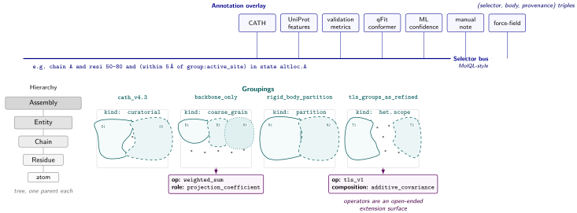
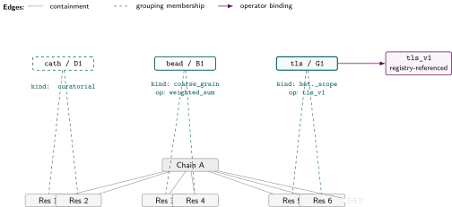
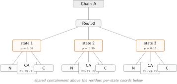
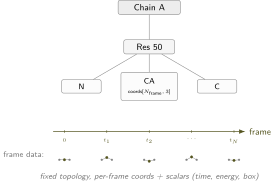
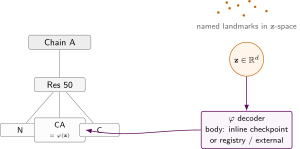
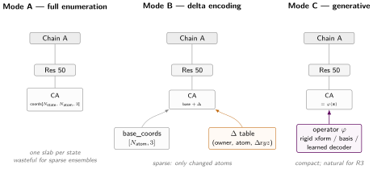

Layout

Layout
One problem with forcing heterogeneous molecular data into a single abstraction is that the data actually contains several distinct kinds of structure, each with different algebra and different storage requirements. Conflating them will produce a format that handles each badly.
Let’s split this into two halves roughly: the core layer and the ensembling layer. The core layer describes the “what”, the primary physical components of the system and their functional groupings. The ensembling layers describe what distinct states characterize these primitive (if any) and how these states differ from each other. The core is stable under heterogeneity; the ensemble layers are the ones that earn the format its keep for modern use cases.
For ease of addressing these concepts, let’s name these layers thusly:
- Core: Hierarchy – the primary physical data (tree): which atom is in which residue, which residue is in which chain, and so on. The vanilla cif mental model.
- Core: Groupings – functional partitions and groupings over the primary data: domain partitions, coarse-grained mappings, rigid-body groups, multiscale pyramids, functional subunits, binding interface members, arbirtrary user-defined selectors.
- Ensemble: Heterogeneity – what states are representable and how they vary. Three regimes with scopes attached to hierarchy or representation levels.
- Ensemble: Materialization – how the heterogeneity descriptions turn into actual coordinates wherever possible.
2.1 Core layers: Hierarchy and Groupings
The core layer describes the “what”: the primary physical components and their named groupings, invariant across every conformational state the deposition encodes. The ensemble layers describe how those primitives vary – which states are representable and how they are stored. A deposition with one structure and one with ten thousand samples share the same core; the ensemble layers are what differ.
The core describes what is invariant across every conformational state the system can take: the atoms that exist, what they are called, what contains them, and what named groupings have been defined over them. A deposition with one structure and a deposition with an ensemble of ten thousand samples share the same core; the ensemble layers sit on top.

Figure 0 — Overlay, bus, and core. The selector bus is the only contact surface between overlay and core. Annotations and heterogeneity descriptors plug onto it the same way: a selector picks a subset across Hierarchy \(\cup\) Groupings \(\cup\) states; a body or operator rides on top. Lassos overlap and may leave atoms unmapped — membership is sparse and namespaces are independent.
2.1.1 Hierarchy
Figure 1 — Containment. The hierarchy layer: five nested levels with one parent each, exactly as in mmCIF. Dashed ... cards mark elided multiplicity. Everything else in this post sits on top of this base.
The Hierarchy layer addresses “what is this system made of?”. Leaving aside disk layout, encoding and stuff like this – this is exactly the component model that is used in the .pdb and .mmcif for the last 50 years. Irreducibly a tree: each atom belongs to exactly one residue, each residue to exactly one chain instance, each chain instance to one entity template, each entity to the assembly, assembly to trajectories, etc – all of these are implicit nodes in a component tree. I’ll call them component nodes or components going forward.
Hierarchy should be as minimal as possible. What belongs here: atom element, atom name, residue comp_id, chain type, entity type. This provides us with a stable base index (in database terms) that all the other layers can refer to.
Any non-physical hierarchy someone might want to impose on the same set of components – CATH domain within chain, rigid-body groups within the domain, secondary-structure element within chain – is to some extent a non-physical curatorial choice and should live in some other data-structure (Groupings), not here.
What else does not belong here: backbone dihedrals, contact distances, domain assignments, validation scores, force-field parameters, TLS groupings. Those are derivable, curatorial, executable; they live in Groupings or as annotation overlays.
One open question here is bond connectivity. Bond orders for standard residues can be inferred from comp_id lookups against the CCD, but for ligands this inference is unreliable – mmCIF doesn’t carry bond orders inline, and the CCD is a separate dependency.
The case for putting an explicit bond graph in the hierarchy core (rather than treating it as a derived pass) is that bond connectivity is not computable from coordinates and element types alone for arbitrary small molecules, making it genuinely irreducible information for heterogeneous systems. This is revisited in ML-native structural operations.
2.1.2 Groupings

Figure 2 — Typed groupings. The Groupings layer is one structural primitive — a sparse bipartite mapping from hierarchy nodes to a named label set, plus a kind tag — used three different ways. cath / D1 is curatorial: membership is the contract, the evaluation model never has to touch it. bead / B1 is coarse_grain: membership plus per-edge weights, with an operator that lowers it to bead positions. tls / G1 is heterogeneity_descriptor.scope: membership plus an operator reference plus a composition tag, lowered when rendering disorder. The operator (tls_v1) is registry-referenced — body recoverable from the spec, shareable across depositions. Coverage zones are drawn non-overlapping for clarity; in practice a residue can belong to many groupings simultaneously.
A molecular system has many valid abstractions at different levels of granularity. Not all have a tree structure and many overlap.
For example, a residue simultaneously belongs to a chain (that’s Hierarchy), to a CATH domain, to an active-site set, to a rigid-body partition used in refinement, to a secondary-structure element, and possibly to a pharmacophore grouping used in docking. Forcing these into one parent hierarchy creates category confusion; a residue cannot have five Hierarchy parents.
So the Groupings layer is not a tree, and earlier drafts of this chapter that tried to taxonomize it into several “kinds of DAG” turned out to be the wrong move. The simpler reading is that there is one structural primitive – a typed grouping – and everything DAG-shaped in this layer or above it (the scope DAG of §2.2 included) is built out of it. A grouping is a sparse bipartite mapping from hierarchy nodes to a named label set, plus a kind tag that tells consumers and the evaluation model what the grouping carries. A curatorial CATH-domain mapping the evaluation model never has to touch; a coarse-graining mapping it lowers when someone asks for bead coordinates; a heterogeneity-descriptor scope it lowers when rendering coordinates. The differences live in what each grouping carries on top of the membership relation, not in the shape of the relation itself.
The core of every grouping is small: a namespace identifier, a version, the member set, and – when applicable – per-member weights. Anything more lives in named annotation attachments (chapter 4’s mechanism), each tagged so the evaluation model can dispatch on it and consumers that don’t recognize the tag can safely ignore it.
These are basically auxilary namespaces that practitioners [biologists, chemists, computational people, etc.] choose to conceptually partition their data into for their work. Some are useful to all, all are useful for some. Much of this stuff currently exists as meshwork of biological resources and databases backlinking to each other in quite frankly a Borgesian tangle of APIs. I’m coming from structural bio and bioinformatics so SIFTS, Elixir resources come to mind. It’s amazing that they exist and is a testament to half a century of curation and data accumulation, but i’ve frequently found myself in a situation where i wished that i didn’t have to rubick’s cube together three layers of annotations from 5 different databases’ APIs over my dataset from my particular domain of biology or macromolecule before even beginning my work. This is annoying enough for a computer person and is still probably somewhat prohibitive or an upfront effort for non-computational biologists. Why not store all (or most) of this stuff alongside the deposited structure? Yes perhaps this is a bit of data duplicaton, but we are talking kilobytes per layer/namespace here.
Mappings are named and versioned – there is no universal “parent” relation in this layer, only separate namespaces. Two groups using different domain partition schemes produce different mappings; neither invalidates the other or touches Hierarchy. Basically a molecular analog of OME-Zarr multiscales: the same system described at multiple resolutions with explicit, queryable operators between levels. A coarse-graining mapping and an anatomical-domain partition sit next to each other, both referencing the same atom IDs but projecting to different label sets and tagged with different kinds.
Some examples:
mapping/domain_partition_cath_v4.3:
kind: curatorial
child_residue_id[E], parent_domain_id[E]
mapping/backbone_only:
kind: coarse_grain
child_atom_id[E], parent_bead_id[E], weight[E] # weight role: projection_coefficient
mapping/rigid_body_partition_refinement:
kind: curatorial
child_residue_id[E], parent_body_id[E]
mapping/tls_groups_as_refined:
kind: heterogeneity_descriptor.scope
child_atom_id[E], parent_tls_id[E]
# operator reference + composition-rule tag in attachments (chapter 3)Weights are optional and role-tagged. The default grouping is unweighted bipartite membership and that covers most curatorial mappings. When weights are present they declare a role: projection_coefficient for coarse-graining (a bead’s position is a weighted sum of constituent atom positions, and the operator that lowers the grouping reads these weights), or membership_probability for soft assignment (a boundary residue between two CATH domains contributes 0.5 to each), or some other role declared by the grouping’s kind. Making the weight column optional and role-tagged is what stops it from quietly conflating “how confident is this membership” with “what coefficient does this position-computing operator use” – two distinct things that earlier drafts tried to fit under one column.
As described here this, i find this decoupled namespace thing pretty useful even when raw. One can imagine refining each namespace to be a community-defined rule with its own ontology and arbitrariyl complicated derivation rules that in the end just has to map to a subset of a physical hierarchy. Wherever the structure is stored – people (or agents) can send their curated annotations. The users or consumers can then opt in or out of how much of this accrued data they want to actually pull when using a structure, but by god at least it will all be in the same place and more or less in the same shape.
The kinds that show up in practice today, with their evaluation-model commitments:
- Curatorial. Project Hierarchy levels onto curatorial labels (CATH domains, secondary-structure elements, active-site membership). Membership is the contract; the evaluation model has nothing to do. Many-to-one or many-to-many; different sources produce different mappings of the same system without conflict.
- Coarse-grain. Project fine Hierarchy levels onto coarser labels with
projection_coefficientweights (atom \(\to\) backbone-bead, residue \(\to\) Martini-bead). The evaluation model lowers these to bead coordinates by weighted sum. These are what IHM’s multi-scale model attempts and where CG beads should live. - Partition. Project Hierarchy atoms or residues onto refinement-defined disjoint groups (TLS bodies, rigid-body partitions, symmetry-equivalent copies). Often produced by specific software, best stored with enough provenance to reproduce.
- Heterogeneity-descriptor scope. A grouping that additionally carries a state space and an operator reference plus a composition-rule tag. The membership declares which atoms or hierarchy nodes the descriptor applies to; the attachments declare what the descriptor does at render time. This is the Heterogeneity layer (§2.2) expressed in the same primitive.
The list is open-ended: new methods register new kinds (and where appropriate new operators in the evaluation model’s registry) without changing the structural primitive. Every grouping references Hierarchy IDs as its left side and declares its own label set on the right; none alters Hierarchy. Storage is sparse-bipartite: edge arrays plus per-edge data.
2.2 Ensemble layers
The ensemble layers describe how the system varies across the states the data captures, and how those variations are physically laid out in storage. Heterogeneity is the abstract description of variation; Materialization is the storage strategy. They are separated because the same abstract description can be stored several ways depending on ensemble size, access pattern, and whether the data came from a method that produces samples, parameters, or a trajectory.
The bridge between the core and the ensemble layers is scope – the same grouping primitive from §2.1.2, used here to declare which atoms or hierarchy nodes a heterogeneity descriptor binds to.
The set of nodes in the core that a given heterogeneity descriptor applies to. Formally, a scope handle is either an inline reference into Hierarchy (one atom, one residue, one chain, the whole assembly; or a span like a residue range – a singleton-or-span grouping) or a reference to a previously declared Groupings entry (the atoms of a named TLS partition, the residues of a CATH domain). A descriptor’s scope determines (i) which atoms its displacement contribution \(\Delta_i^\ell(\cdot)\) affects, and (ii) where the descriptor sits in the scope DAG when it is composed with other descriptors.
Every heterogeneity descriptor attaches to exactly one scope, and a heterogeneity descriptor is itself a typed grouping (kind: heterogeneity_descriptor.scope) carrying an operator-reference attachment and a composition-rule tag. A B-factor is atom-scoped; a TLS descriptor is scoped to a partition declared in Groupings; a cryoDRGN latent is scoped to the whole assembly. The scope plus the attachments together are what make the descriptor legible to composition (chapter 3) – the mechanism by which “what varies at chain level” and “what varies at residue level” can coexist in the same deposition without stepping on each other.
Concretely, the scope DAG for a small kinase deposition with one bound inhibitor looks like this:
nodes (scope, state):
(entity_instance:inhibitor, bound)
(entity_instance:inhibitor, absent)
(residue_range:loop, open) nested_under (inhibitor, bound)
(residue_range:loop, closed) nested_under (inhibitor, bound)
(residue_range:loop, relaxed) nested_under (inhibitor, absent)
(chain:A, tls_chain_A) broadcast (parametric, no sample axis)
(atom:*, adp_isotropic) broadcast
edges:
nested_under : state-space restriction
derived_from : provenance, function referenceThe discrete-stack descriptors form the inner spine; broadcast (parametric Gaussian) descriptors hang off it without state-space coupling. Both edge types and how they participate in rendering are unpacked in chapter 3.
2.2.1 Heterogeneity
The Heterogeneity layer describes how the system varies – both the geometric variation that matters for function and the thermodynamic variation that carries free-energy content single structures discard 1,2. This is the hardest layer to design because the right abstraction depends entirely on what kind of variation is being described, and different experimental and computational methods produce fundamentally different kinds of variation. Forcing them all into a single formalism – a list of discrete states, a continuous latent space, a trajectory – will produce something that handles each case awkwardly.
We distinguish three heterogeneity regimes, because each has a different natural representation and the transitions between them are meaningful design boundaries. Orthogonal to the regime axis is scope: every heterogeneity descriptor attaches to a level of the Hierarchy tree (§2.1.1) or a grouping in Groupings (§2.1.2). A B-factor is atom-scoped; a TLS group or ECHT hierarchical disorder component 3 is scoped to a Groupings entry; the compositional/conformational nesting proposed by 4 is entity-instance scope containing residue-range scope. Both axes are features of the format.
When multiple heterogeneity descriptors coexist, their couplings (where they exist at all) form the scope DAG: nodes are (scope, state) pairs, and edges encode whether a child-scope state is legal only under some parent-scope state (hierarchical nesting). Chapter 3 walks through how descriptors at different scopes compose through this DAG to produce full coordinates.
A label for the kind of variation a descriptor describes, independent of how it is stored. Three regimes cover the space: R1 (discrete ensemble), R2 (trajectory), R3 (continuous landscape). Each has a different natural representation; the boundaries between them are meaningful design seams.

Figure 3 — Regime 1: discrete ensemble. A finite, enumerable set of named states, each with its own coords and a population. NMR bundles, qFit sidechain ensembles, IHM multi-state models. State count in the tens to low hundreds.
Heterogeneity Regime 1: Discrete Ensemble. A finite, enumerable set of conformers – NMR bundles, qFit sidechain ensembles, multi-conformer crystallographic models, short MD-derived state libraries. The right representation is explicit: a state index plus coordinates or coordinate deltas per state, typically scoped to a residue or residue range. The number of states sits in the tens to low hundreds. No cleverness required.
The incumbent encoding in mmCIF is the altloc field paired with refined occupancy. What is broken is semantic, not structural: the same altloc letter overloads conformational variation (different geometry, same chemistry) and compositional variation (different chemistry entirely – ligand absent vs. present, two bound fragments in the same site) 4,5, and most analysis software silently discards alternates beyond A. Treating discrete states as a distinct regime rather than absorbing them into a continuous disorder parameter is empirically grounded: controlled simulations show refined B-factors can underestimate true positional heterogeneity by up to sixfold for mobile atoms 6, so the information carried by discrete conformers is not something B-factors ever recover. Binding events propagate rotamer rearrangements well beyond the binding site 7, which is precisely the kind of coupling this regime is meant to capture.

Figure 4 — Regime 2: trajectory. Composition is fixed; the coordinate leaf becomes a dense \((N_\text{frame}, N_\text{atom}, 3)\) array chunked along the frame axis, with per-frame scalars riding along. H5MD already specifies the on-disk shape; the open question is cloud-native chunking.
Heterogeneity Regime 2: Trajectory. An ordered sequence of frames sharing a fixed topology – MD, coarse-grained simulation, time-resolved crystallography, a cryo-EM particle series treated as a time series. The Hierarchy, Groupings, and per-atom properties (atom names, residue assignments, bond graph) are the same across every frame; what varies is the coordinate array. The right representation is what H5MD already does: a dense \((N_{\mathrm{frame}}, N_{\mathrm{atom}}, 3)\) array chunked along the frame axis, with per-frame metadata (time, energy, box vectors). The format question here is not about heterogeneity representation but about chunking strategy, compression, and efficient access patterns – and whether the coordinate array is inline or pointed to as an external artifact via Materialization Mode C (§2.2.2), which is usually the right call because trajectories dwarf everything else in the deposition.
The frame axis does not need to be interpreted as a state space, and for long trajectories it shouldn’t be. But derived state decompositions can coexist alongside the raw stream: a Markov state model reduces a trajectory to a small set of metastable states with a transition rate matrix 8, which is effectively a Heterogeneity Regime 1 ensemble with provenance pointing back to the Heterogeneity Regime 2 source. Both shapes are valid, and the format should support carrying them side by side rather than forcing a commitment to one.
You don’t store a few reference structures; you store one, plus deltas or raw coordinates for every frame.
“Trajectory” is broader than MD. Any ordered sequence of frames shares this shape: a cryo-EM time-resolved dataset, a photo-activated structural series, an electron microscope tomographic tilt series reduced to atomic models. The format doesn’t need to know whether the ordering is time, reaction coordinate, or experimental parameter — it just needs to carry the index.

Figure 5 — Regime 3: continuous landscape. A collective motion over hundreds of atoms is one low-dimensional \(\mathbf{z}\) plus a stored decoder \(\varphi\) (cryoDRGN checkpoint, normal-mode basis, PCA). Named discrete states become landmarks in \(\mathbf{z}\)-space, not fundamental objects. Mode C materialization by construction; the decoder body lives inline, registry, or external.
Heterogeneity Regime 3: Continuous Landscape. The heterogeneity is not a finite state list but a distribution over a low-dimensional manifold – cryoDRGN latent spaces, normal mode deformations, rigid-body motions of domains, ribosome ratcheting. Here the critical insight is that a hundred residues moving together as a collective motion is not a hundred heterogeneity variables. It is one low-dimensional variable plus a stored mapping from that variable to the displacement field over all affected atoms:
mode_basis[k, N_atom, 3] # k basis vectors
mode_coeff[N_sample, k] # sample coordinates in latent spaceor in the neural decoder case:
latent_z[N_sample, d]
decoder_ref # TorchScript blob or checkpoint referenceNamed discrete states in this regime are best understood as landmarks or clusters in the continuous space – selected by a human or a clustering algorithm after the fact – rather than fundamental objects in the data model. The format stores both: the continuous representation (latent coordinates per sample) and any named landmarks, with provenance recording how the landmarks were defined.
One reality check: this regime is already the output of a growing class of structure-prediction and reconstruction methods, but the field has nowhere to put it. Diffusion-based structure priors 9,10 and cryo-EM-guided samplers 11 produce either pretrained generative models usable as decoders or posterior sample sets with informative uncertainty – outputs whose natural representation is continuous, and whose current fate is being collapsed back into a Materialization Mode A sample of explicit structures because there is no format slot for “a decoder reference” or “samples from a posterior linked to this structure.” 2’s framing of the single-structure frontier is the field-level complaint this regime is meant to answer; Materialization Mode C, below, is the materialization half of the fix.
2.2.2 Materialization

Figure 6 — Materialization Modes A / B / C. Same containment, three storage strategies for the coordinate leaf. A stores every state, B stores a base plus sparse \(\Delta\)s, C stores an operator applied to a compact input. Materialization is a per-scope storage choice, independent of the heterogeneity regime.
Given a heterogeneity description, how are actual coordinates produced? Materialization is a separate concern from the heterogeneity model because the same abstract description can be realized by different storage strategies depending on ensemble size, composition variability, and access pattern.
Three modes cover the space. They are mutually substitutable for a given heterogeneity descriptor – switching from one to another is a storage choice that does not change what the descriptor means.
A storage strategy for a heterogeneity descriptor: Mode A stores every state explicitly, Mode B stores a base plus sparse per-state deltas, Mode C stores an operator (parametric Gaussian, basis, neural decoder, or external reference) plus its inputs. The mode is independent of the regime; the same descriptor can be re-materialized between modes without changing its meaning.
Materialization Mode A: Full Enumeration. coords[N_state, N_atom, 3] with per-state metadata (population, free energy, latent vector). Appropriate for Heterogeneity Regime 1 and for any case where the joint assignment space is small enough to enumerate. Simple consumers – visualization tools, PDB depositions – only need to handle this mode.
Materialization Mode B: Delta Encoding. A base conformation plus sparse per-state or per-variable-assignment coordinate deltas. Appropriate when most states differ only locally – qFit-like sidechain ensembles where the backbone is unchanged, loop substates where the rest of the chain is unaffected. Far more compact than Materialization Mode A for large sparse ensembles.
base_coords[N_atom, 3]
delta_table:
owner_type # state | variable_value
owner_id
atom_id[K]
delta_xyz[K, 3]Materialization Mode C: Generative / External Reference. Coordinates are produced by applying a stored operator to a compact representation. Subcases: rigid-body transforms (quaternion + translation per instance per state), normal mode coefficients (linear sum over a stored basis), and learned decoders (latent vector fed to a stored TorchScript or checkpoint). The descriptor declares an operator type and stores either the operator’s body inline or a content-hashed reference (registry, or external artifact) plus the inputs that operator consumes; coordinates are computed on demand. The choice between the three storage venues is an orthogonal per-deposition decision – see extension surfaces – so a decoder or basis is a stored morphism from latents to displacements, versioned by content hash and shareable across depositions when that makes sense.
Mode C also covers the obvious-but-underformalized case of referencing an external artifact. An MD trajectory stored as H5MD or Zarr, a cryoDRGN decoder checkpoint, a normal-mode basis file – any of these can be the heavy payload, with the structure file carrying a stable pointer (artifact identifier, producing method, version, content hash) and the coupling back to atom IDs. The structure does not need to swallow the trajectory; it needs to know where the trajectory lives and how to align its indices.
The Mode C subcases share a label but their operator semantics differ, and the evaluation model has to specify each one explicitly:
- A parametric Gaussian descriptor (TLS, anisotropic ADP, normal-mode-derived covariance) takes its parameters and an atom position and returns a probability distribution over displacements; sampling produces a draw, the mean is zero, the second moment is the propagated covariance. Multiple parametric Gaussians at different scopes that describe the same physical signal (thermal motion) compose by additive covariance, not as a residual relationship – this is the half of the composition rule that the ECHT precedent 12 vindicates.
- A basis descriptor (normal modes, PCA) takes coefficients plus a stored basis and returns a deterministic displacement field.
- A neural decoder takes a latent vector and returns a deterministic displacement field (or a coordinate set, depending on the network’s output convention).
- An external reference takes a lookup key (frame index, particle id) and returns a coordinate set from an out-of-band artifact.
All four can be described as “stored operator plus inputs” and stored under the same Mode C label, but the contract a consumer has to obey to evaluate them is different in each case – which is the substance the evaluation-model document has to pin down.
The key design principle is that materialization mode is a storage choice, not a property of the physics. The format should not force Heterogeneity Regime 3 systems into Materialization Mode A just because Materialization Mode A is simpler to implement.
2.0 Static IR and evaluation model
The four layers above describe the intermediate representation: what a deposition contains, schema and bytes. Every IR also has an evaluation model – the contract that turns those bytes into rendered coordinates. The static schema is mostly a matter of discipline; the evaluation model is the design problem, and it is taken up in the evaluation model chapter.
2.3 What is not in the core
The LLVM discipline – elaborated in Modularity examples – states that the IR should contain only what cannot be derived from anything more primitive, and that derived information should live in passes rather than in the core. This is worth stating explicitly for the structural biology case because the pressure to put derived information in the core is constant and has demonstrably destabilized mmCIF through category accretion.
Backbone dihedrals are a function of Cartesian coordinates. Contact maps are a function of coordinates and a cutoff. Spatial neighbor graphs are a function of coordinates, a cutoff, and a choice of distance metric. Spherical harmonic edge features are a function of neighbor graphs and a choice of \(l_{\max}\). AF2-style pair representations are a function of sequence and structure. Validation scores are a function of coordinates and a reference database. Domain assignments are a function of coordinates and a domain classification algorithm. All of these are passes over Hierarchy + Groupings + Heterogeneity + Materialization. None of them belongs in the core.
The practical payoff: a format whose core is topology, coordinates, and heterogeneity variables has no reason to grow when a new experimental method produces a new derived quantity. The new quantity becomes an annotation overlay (see Query language and annotations) or a computed pass. The core is stable because it is genuinely irreducible, not because it was protected by committee inertia.